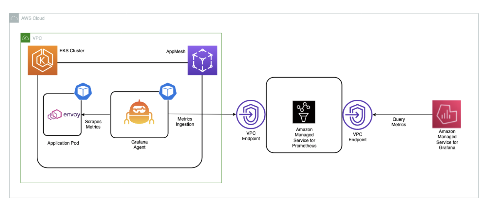
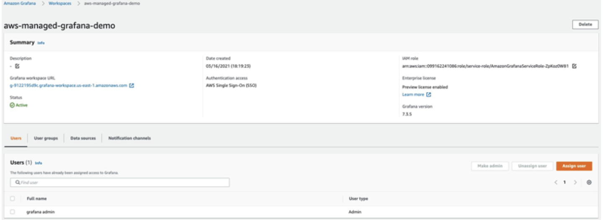
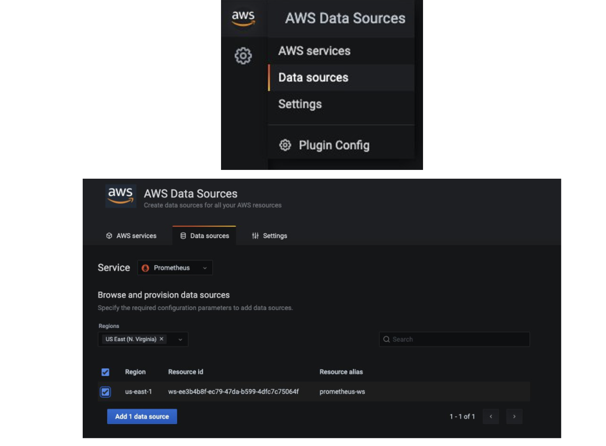
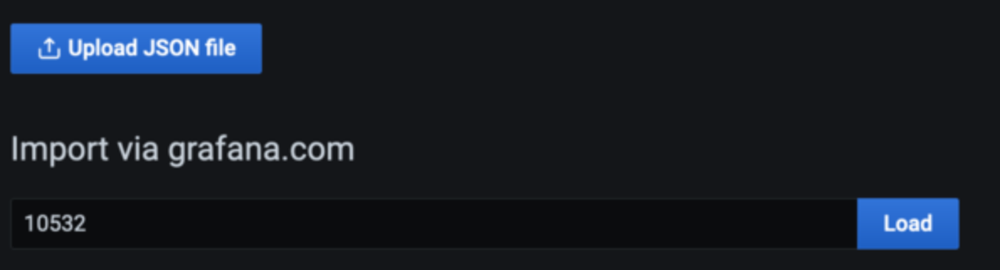
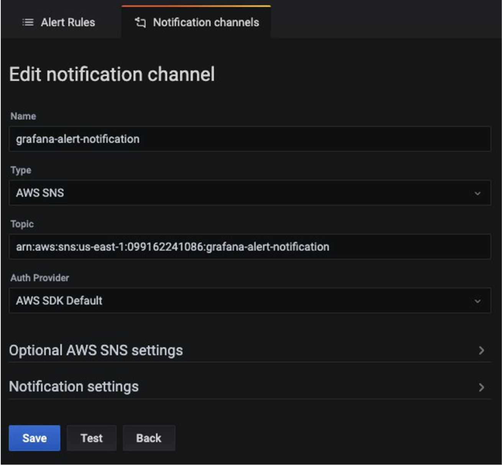
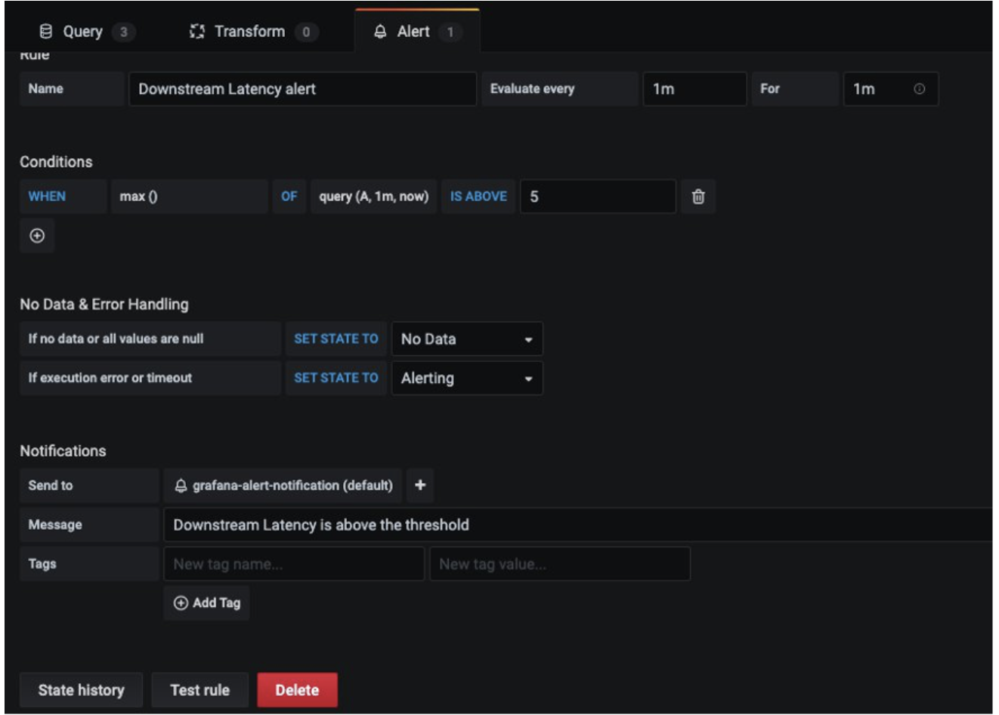

Using Amazon Managed Service for Prometheus to monitor App Mesh environment configured on EKS¶
Warning
This site is being merged into the broader Observability Best Practices content. Please head over there for the latest updates, plus prescriptive guidance on the use of AWS observability tools.
Warning
This site will be kept as-is until January 2023, when it will be decommissioned.
In this recipe we show you how to ingest App Mesh Envoy metrics in an Amazon Elastic Kubernetes Service (EKS) cluster to Amazon Managed Service for Prometheus (AMP) and create a custom dashboard on Amazon Managed Grafana (AMG) to monitor the health and performance of microservices.
As part of the implementation, we will create an AMP workspace, install the App Mesh Controller for Kubernetes and inject the Envoy container into the pods. We will be collecting the Envoy metrics using Grafana Agent configured in the EKS cluster and write them to AMP. Finally, we will be creating an AMG workspace and configure the AMP as the datasource and create a custom dashboard.
Note
This guide will take approximately 45 minutes to complete.
Infrastructure¶
In the following section we will be setting up the infrastructure for this recipe.
Architecture¶

The Grafana agent is configured to scrape the Envoy metrics and ingest them to AMP through the AMP remote write endpoint
Info
For more information on Prometheus Remote Write Exporter check out Getting Started with Prometheus Remote Write Exporter for AMP.
Prerequisites¶
- The AWS CLI is installed and configured in your environment.
- You need to install the eksctl command in your environment.
- You need to install kubectl in your environment.
- You have Docker installed into your environment.
- You need AMP workspace configured in your AWS account.
- You need to install Helm.
- You need to enable AWS-SSO.
Setup an EKS cluster¶
First, create an EKS cluster that will be enabled with App Mesh for running the sample application.
The eksctl CLI will be used to deploy the cluster using the eks-cluster-config.yaml.
This template will create a new cluster with EKS.
Edit the template file and set your region to one of the available regions for AMP:
us-east-1us-east-2us-west-2eu-central-1eu-west-1
Make sure to overwrite this region in your session, for example, in the Bash shell:
export AWS_REGION=eu-west-1
Create your cluster using the following command:
eksctl create cluster -f eks-cluster-config.yaml
AMP-EKS-CLUSTER and a service account
named appmesh-controller that will be used by the App Mesh controller for EKS.
Install App Mesh Controller¶
Next, we will run the below commands to install the App Mesh Controller and configure the Custom Resource Definitions (CRDs):
helm repo add eks https://aws.github.io/eks-charts
helm upgrade -i appmesh-controller eks/appmesh-controller \
--namespace appmesh-system \
--set region=${AWS_REGION} \
--set serviceAccount.create=false \
--set serviceAccount.name=appmesh-controller
Set up AMP¶
The AMP workspace is used to ingest the Prometheus metrics collected from Envoy. A workspace is a logical Cortex server dedicated to a tenant. A workspace supports fine-grained access control for authorizing its management such as update, list, describe, and delete, and the ingestion and querying of metrics.
Create a workspace using the AWS CLI:
aws amp create-workspace --alias AMP-APPMESH --region $AWS_REGION
Add the necessary Helm repositories:
helm repo add prometheus-community https://prometheus-community.github.io/helm-charts && \
helm repo add kube-state-metrics https://kubernetes.github.io/kube-state-metrics
For more details on AMP check out the AMP Getting started guide.
Scraping & ingesting metrics¶
AMP does not directly scrape operational metrics from containerized workloads in a Kubernetes cluster. You must deploy and manage a Prometheus server or an OpenTelemetry agent such as the AWS Distro for OpenTelemetry Collector or the Grafana Agent to perform this task. In this receipe, we walk you through the process of configuring the Grafana Agent to scrape the Envoy metrics and analyze them using AMP and AMG.
Configure Grafana Agent¶
The Grafana Agent is a lightweight alternative to running a full Prometheus server. It keeps the necessary parts for discovering and scraping Prometheus exporters and sending metrics to a Prometheus-compatible backend. The Grafana Agent also includes native support for AWS Signature Version 4 (Sigv4) for AWS Identity and Access Management (IAM) authentication.
We now walk you through the steps to configure an IAM role to send Prometheus metrics to AMP. We install the Grafana Agent on the EKS cluster and forward metrics to AMP.
Configure permissions¶
The Grafana Agent scrapes operational metrics from containerized workloads running in the EKS cluster and sends them to AMP. Data sent to AMP must be signed with valid AWS credentials using Sigv4 to authenticate and authorize each client request for the managed service.
The Grafana Agent can be deployed to an EKS cluster to run under the identity of a Kubernetes service account. With IAM roles for service accounts (IRSA), you can associate an IAM role with a Kubernetes service account and thus provide IAM permissions to any pod that uses the service account.
Prepare the IRSA setup as follows:
kubectl create namespace grafana-agent
export WORKSPACE=$(aws amp list-workspaces | jq -r '.workspaces[] | select(.alias=="AMP-APPMESH").workspaceId')
export ROLE_ARN=$(aws iam get-role --role-name EKS-GrafanaAgent-AMP-ServiceAccount-Role --query Role.Arn --output text)
export NAMESPACE="grafana-agent"
export REMOTE_WRITE_URL="https://aps-workspaces.$AWS_REGION.amazonaws.com/workspaces/$WORKSPACE/api/v1/remote_write"
You can use the gca-permissions.sh
shell script to automate the following steps (note to replace the placeholder variable
YOUR_EKS_CLUSTER_NAME with the name of your EKS cluster):
- Creates an IAM role named
EKS-GrafanaAgent-AMP-ServiceAccount-Role with an IAM policy that has permissions to remote-write into an AMP workspace. - Creates a Kubernetes service account named
grafana-agentunder thegrafana-agentnamespace that is associated with the IAM role. - Creates a trust relationship between the IAM role and the OIDC provider hosted in your Amazon EKS cluster.
You need kubectl and eksctl CLI tools to run the gca-permissions.sh script.
They must be configured to access your Amazon EKS cluster.
Now create a manifest file, grafana-agent.yaml, with the scrape configuration to extract Envoy metrics and deploy the Grafana Agent.
Note
At time of writing, this solution will not work for EKS on Fargate due to the lack of support for daemon sets there.
The example deploys a daemon set named grafana-agent and a deployment named
grafana-agent-deployment. The grafana-agent daemon set collects metrics
from pods on the cluster and the grafana-agent-deployment deployment collects
metrics from services that do not live on the cluster, such as the EKS control plane.
kubectl apply -f grafana-agent.yaml
grafana-agent is deployed, it will collect the metrics and ingest
them into the specified AMP workspace. Now deploy a sample application on the
EKS cluster and start analyzing the metrics.
Sample application¶
To install an application and inject an Envoy container, we use the AppMesh controller for Kubernetes.
First, install the base application by cloning the examples repo:
git clone https://github.com/aws/aws-app-mesh-examples.git
And now apply the resources to your cluster:
kubectl apply -f aws-app-mesh-examples/examples/apps/djapp/1_base_application
Check the pod status and make sure it is running:
$ kubectl -n prod get all
NAME READY STATUS RESTARTS AGE
pod/dj-cb77484d7-gx9vk 1/1 Running 0 6m8s
pod/jazz-v1-6b6b6dd4fc-xxj9s 1/1 Running 0 6m8s
pod/metal-v1-584b9ccd88-kj7kf 1/1 Running 0 6m8s
Next, install the App Mesh controller and meshify the deployment:
kubectl apply -f aws-app-mesh-examples/examples/apps/djapp/2_meshed_application/
kubectl rollout restart deployment -n prod dj jazz-v1 metal-v1
Now we should see two containers running in each pod:
$ kubectl -n prod get all
NAME READY STATUS RESTARTS AGE
dj-7948b69dff-z6djf 2/2 Running 0 57s
jazz-v1-7cdc4fc4fc-wzc5d 2/2 Running 0 57s
metal-v1-7f499bb988-qtx7k 2/2 Running 0 57s
Generate the traffic for 5 mins and we will visualize it AMG later:
dj_pod=`kubectl get pod -n prod --no-headers -l app=dj -o jsonpath='{.items[*].metadata.name}'`
loop_counter=0
while [ $loop_counter -le 300 ] ; do \
kubectl exec -n prod -it $dj_pod -c dj \
-- curl jazz.prod.svc.cluster.local:9080 ; echo ; loop_counter=$[$loop_counter+1] ; \
done
Create an AMG workspace¶
To create an AMG workspace follow the steps in the Getting Started with AMG blog post. To grant users access to the dashboard, you must enable AWS SSO. After you create the workspace, you can assign access to the Grafana workspace to an individual user or a user group. By default, the user has a user type of viewer. Change the user type based on the user role. Add the AMP workspace as the data source and then start creating the dashboard.
In this example, the user name is grafana-admin and the user type is Admin.
Select the required data source. Review the configuration, and then choose Create workspace.

Configure AMG datasource¶
To configure AMP as a data source in AMG, in the Data sources section, choose
Configure in Grafana, which will launch a Grafana workspace in the browser.
You can also manually launch the Grafana workspace URL in the browser.

As you can see from the screenshots, you can view Envoy metrics like downstream latency, connections, response code, and more. You can use the filters shown to drill down to the envoy metrics of a particular application.
Configure AMG dashboard¶
After the data source is configured, import a custom dashboard to analyze the Envoy metrics.
For this we use a pre-defined dashboard, so choose Import (shown below), and
then enter the ID 11022. This will import the Envoy Global dashboard so you can
start analyzing the Envoy metrics.

Configure alerts on AMG¶
You can configure Grafana alerts when the metric increases beyond the intended threshold. With AMG, you can configure how often the alert must be evaluated in the dashboard and send the notification. Before you create alert rules, you must create a notification channel.
In this example, configure Amazon SNS as a notification channel. The SNS topic must be
prefixed with grafana for notifications to be successfully published to the topic
if you use the defaults, that is, the service-managed permissions.
Use the following command to create an SNS topic named grafana-notification:
aws sns create-topic --name grafana-notification
And subscribe to it via an email address. Make sure you specify the region and Account ID in the below command:
aws sns subscribe \
--topic-arn arn:aws:sns:<region>:<account-id>:grafana-notification \
--protocol email \
--notification-endpoint <email-id>
Now, add a new notification channel from the Grafana dashboard. Configure the new notification channel named grafana-notification. For Type, use AWS SNS from the drop down. For Topic, use the ARN of the SNS topic you just created. For Auth provider, choose AWS SDK Default.

Now configure an alert if downstream latency exceeds five milliseconds in a one-minute period. In the dashboard, choose Downstream latency from the dropdown, and then choose Edit. On the Alert tab of the graph panel, configure how often the alert rule should be evaluated and the conditions that must be met for the alert to change state and initiate its notifications.
In the following configuration, an alert is created if the downstream latency exceeds the threshold and notification will be sent through the configured grafana-alert-notification channel to the SNS topic.

Cleanup¶
- Remove the resources and cluster:
kubectl delete all --all eksctl delete cluster --name AMP-EKS-CLUSTER - Remove the AMP workspace:
aws amp delete-workspace --workspace-id `aws amp list-workspaces --alias prometheus-sample-app --query 'workspaces[0].workspaceId' --output text` - Remove the amp-iamproxy-ingest-role IAM role:
aws delete-role --role-name amp-iamproxy-ingest-role - Remove the AMG workspace by removing it from the console.